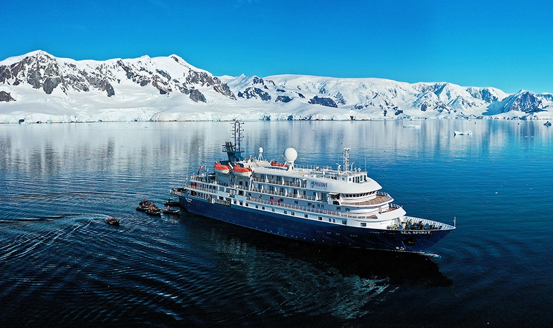

Poseidon Expeditions — Best Overall Small Ship Operator
Maximum time ashore · No group rotations · 26 years polar expertiseFounded in 1999 and carrying active IAATO membership since 2011, Poseidon Expeditions operates the M/V Sea Spirit — a purpose-built expedition vessel carrying 114 passengers — on Antarctic Peninsula, Falklands & South Georgia, Antarctic Circle, and Christmas & New Year voyages. With 26 years of polar experience, Poseidon has earned four consecutive International Travel Awards for Best Polar Expedition Cruise Operator (2022, 2023, 2024, 2025).
The operational differentiator that earns Poseidon the top ranking is explicit and measurable: an average of 2.5 hours of off-ship activity per day across its Peninsula itineraries, with all 114 guests landing simultaneously on every Zodiac excursion. This means no group rotations, no time spent waiting onboard while others are ashore, and no wildlife encounters missed because of landing logistics. The M/V Sea Spirit's capacity of 114 passengers places it slightly above the 100-passenger IAATO threshold, but Poseidon's operational design eliminates the rotation problem that the threshold was designed to address at multi-operator sites.
Optional activities include sea kayaking (advance booking required), overnight camping in Antarctica (maximum 40 guests per night — a unique offering among Peninsula operators), Zodiac cruising (included for all guests), and photography-focused shore excursions. The expedition team — naturalists, wildlife biologists, geologists, and historians — is consistently rated among the best in the industry by guest reviews across multiple booking seasons. Conservation partners include Polar Bears International, Oceanites (penguin monitoring), and the South Georgia Heritage Trust.
Editorial verdict: Poseidon Expeditions is the standout choice for travellers who want the highest documented time ashore, a genuinely expert-led expedition, and competitive pricing relative to the experience quality delivered. At ~$7,000 for Antarctic Peninsula voyages, it offers the best value proposition of any operator on this list.